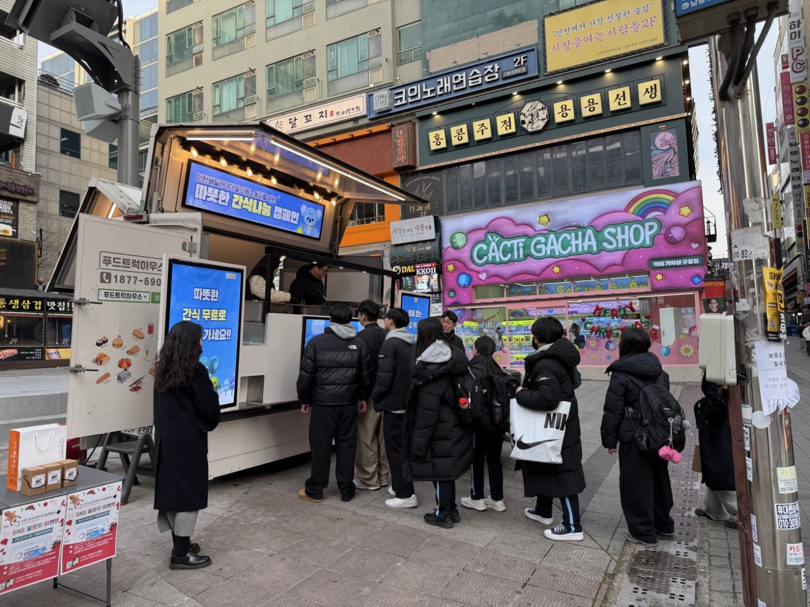
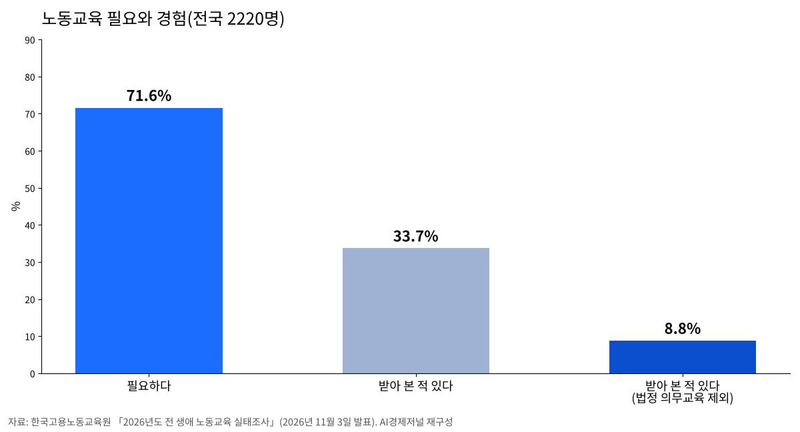
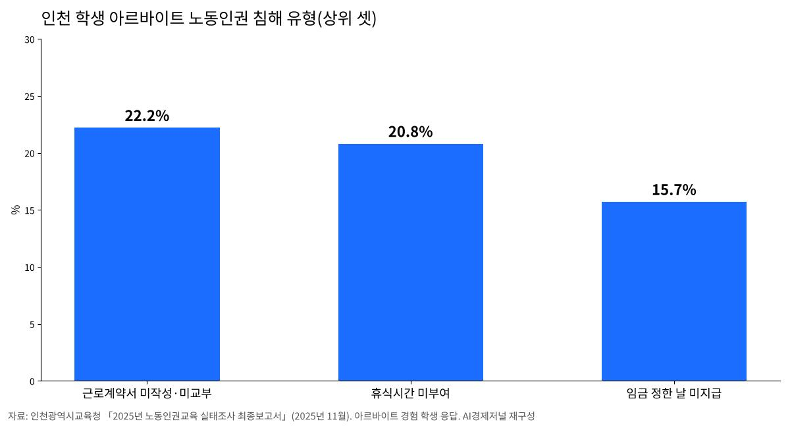

노동교육 필요하다 71.6%…의무교육 빼면 받아 본 사람 8.8%
생애주기·노동형태별 첫 전국 조사…시니어·작은 사업장 공백
인천 알바 학생 40.6%가 부당대우, 교육 받았다는 학생은 17.8%
AI경제저널=김갑봉 기자 | 국민 10명 가운데 7명은 노동교육이 필요하다고 답했다. 그러나 산업안전·성희롱 예방 같은 법정 의무교육을 빼면 노동교육을 받아 본 사람은 8.8%에 그쳤다. 일터에서 내 권리를 배울 기회가 필요한 만큼 주어지지 않는다는 뜻이다.
한국고용노동교육원은 3일 이런 내용의 「2026년도 전 생애 노동교육 실태조사」 결과를 발표했다. 생애주기와 노동형태 전반에 걸쳐 노동교육의 공급과 수요를 진단한 국내 첫 전국 단위 조사다.
청년·구직자, 재직자, 경력전환자, 비정형 노동자, 소상공인, 시니어, 이주노동자 일곱 집단 2220명을 설문했다. 교육청·지자체·공공기관 같은 운영기관 현황조사와 심층면접도 함께 했다.

필요 71.6%, 경험 33.7%, 의무교육 빼면 8.8%
노동교육이 필요하다는 응답은 71.6%였다. 노동교육을 받아 본 사람은 33.7%였고, 이 가운데 상당수는 법으로 정한 의무교육이었다. 의무교육을 빼면 경험률은 8.8%로 떨어진다.

받고 싶은 교육과 받은 교육도 어긋났다. 노동교육이 필요한 까닭으로는 56.2%가 「내 권리와 의무를 제대로 알고 싶어서」를 꼽았다. 원하는 내용은 임금·수당에 관한 권리(53.0%)와 근로계약서 쓰고 확인하는 법(47.0%)이었다. 실제로 받은 교육은 산업안전에 몰려 있었다.
교육을 받지 못한 걸림돌은 정보 부족(35.0%), 시간 부족(26.7%), 접근성(20.9%) 순이었다. 필요를 느끼지 못했다는 응답은 6.1%에 그쳤다. 수요는 있는데 교육이 사람에게 닿지 못한다는 얘기다.
작은 사업장, 시니어, 이주노동자가 비어 있다
공백은 일하는 형태에 따라 달랐다. 30인 미만 사업장 재직자의 43.7%는 사업장 안에 노동교육이 없다고 답했다. 프리랜서의 경험률은 17.5%였다. 청년·구직자 가운데 학교에서 노동교육을 받았다는 응답은 20.3%였다.
나이와 처지에 따라서도 갈렸다. 시니어는 필요하다는 응답이 77.0%로 일곱 집단 가운데 가장 높았지만, 의무교육을 뺀 경험률은 6.9%로 가장 낮았다. 경력전환자는 필요 인식과 경험률의 차이가 48.3%포인트로 가장 컸다.
플랫폼종사자는 72.2%가 노동 관련 교육이나 정보를 접했다. 그러나 자기 처지에 맞았다는 응답은 17.3%였다. 이주노동자의 54.2%는 언어를 참여 장벽으로 꼽았다.
연구진은 중·고교 교육과정에 노동교육 시수를 확보하라고 제안했다. 노동인권교육 법제화와 예산 확보도 주문했다. 생애주기별 맞춤 과정, 강사·교사 양성과 표준 교안, 전국 단위 노동교육 협의체도 과제로 들었다. 교육원은 결과를 「고용노동교육 2.0」과 전 생애 노동교육 사업 설계에 반영하겠다고 밝혔다.
인천 학생, 알바 10명 중 4명이 부당대우
인천은 학교 노동인권교육을 조례로 정해 둔 곳이다. 「인천광역시교육청 노동인권교육 활성화 조례」는 2020년 7월 13일 제정됐다. 조례 제8조는 마이스터고·특성화고와 직업교육을 위탁하는 일반고의 교장이 재학생에게 해마다 2시간 이상 노동인권교육을 하도록 정한다.
인천시교육청은 (사)일과여가문화연구원에 맡겨 지난해 7월 「2025년 노동인권교육 실태조사」를 했다. 학교 현장의 모습이 드러난다. 초등학교 5·6학년과 중·고등학생 6885명, 교원 1203명이 답했다.
최근 1년 안에 아르바이트를 해 본 학생은 9.8%, 직업계고 학생은 26.8%였다. 하루 평균 5.06시간, 한 주 평균 10.7시간 일했다. 일한 곳의 48.6%는 5인 미만 사업장이었다.
아르바이트를 해 본 학생의 40.6%가 노동인권 침해를 겪었다. 2022년 조사(50.27%)보다는 줄었다. 근로계약서를 쓰지 않았거나 받지 못한 경우(22.2%)가 가장 많았다. 쉬는 시간을 받지 못한 경우(20.8%), 임금을 정한 날에 받지 못한 경우(15.7%)가 뒤를 이었다.

임금을 정한 날에 받지 못한 경우는 2022년 13.7%에서 오히려 늘었다. 부당한 일을 당한 뒤에는 「참고 계속 일했다」가 37.3%로 가장 많았고, 「일을 그만뒀다」가 28.3%였다. 구제 방법을 안다는 학생은 51.1%로 2022년 29.6%보다 크게 늘었다.
「영상 틀어 줬다」와 「잘 모르겠다」 사이
교육이 학생에게 닿았는지는 다른 문제다. 노동인권교육을 받은 적이 있다는 학생은 17.8%였고, 「잘 모르겠다」가 60.5%였다. 같은 물음에 교원은 55.3%가 학교에서 노동인권교육을 했다고 답했다. 직업계고 학생은 41.6%가 받았다고 기억했다.
방식에서 차이가 컸다. 교원이 가장 많이 꼽은 방식은 학급별 영상 시청(73.3%)이었다. 학생이 가장 많이 기억한 방식은 학급별 대면교육(40.5%)이었다. 교원도 대면교육의 효과를 5점 만점에 3.8점으로 가장 높게 봤다.
교육을 하지 않은 교원에게 까닭을 두 가지씩 고르게 하자 마땅한 교재·콘텐츠가 부족하다(26.6%)가 가장 많았다. 조례를 안다는 교원은 56%였다. 학생이 부당한 대우를 받을 때 대책으로는 교육청 안 상담·권리구제 전담센터 신설(34.2%)과 고용노동부 지역청 신고(33.6%)를 꼽았다.
인천 노동자·학생이 알아 둘 것
인천 학생이 더 듣고 싶은 내용은 아르바이트할 때 알아야 할 임금과 근로시간(28.9%)이었다. 전국 조사에서 어른들이 원한 임금·수당 교육과 같다. 근로기준법 제17조는 사용자가 근로계약을 맺을 때 임금, 소정근로시간, 휴일, 연차휴가를 밝히고 서면으로 내주도록 정한다.
제64조는 15세 미만과 중학교에 다니는 18세 미만을 원칙적으로 노동자로 쓰지 못하게 한다. 고용노동부 장관이 발급한 취직인허증이 있어야 한다. 임금이나 근로계약서를 받지 못했다면 사업장 관할 고용노동부 지방관서에 신고할 수 있다. 인천에는 중부지방고용노동청과 인천북부지청이 있다.
참고문헌
- "국민 10명 중 7명 '노동교육 필요'… 의무교육 제외 경험률은 8.8%"(2026년도 전 생애 노동교육 실태조사 결과), 한국고용노동교육원, 2026.11.3., https://www.moel.go.kr/news/enews/report/enewsView.do?news_seq=20182
- "2025년 인천광역시교육청 노동인권교육 실태조사 최종보고서", 인천광역시교육청(연구 (사)일과여가문화연구원), 2025.11., https://www.ice.go.kr/upload/ice/na/bbs_2076/2026/01/565e2d5f7a43986982674b631c05a7b1.pdf
- "인천광역시교육청 노동인권교육 활성화 조례"(제8조), 국가법령정보센터, https://www.law.go.kr/자치법규/인천광역시교육청노동인권교육활성화조례
- "근로기준법"(제17조·제64조), 국가법령정보센터, https://www.law.go.kr/법령/근로기준법
- "관할관서찾기(인천/강원)", 고용노동부, https://www.moel.go.kr/minwon/rigion/rigion_C2_2.do
[사진 출처]
- [사진1] 인천광역시 보도자료 「인천시, 혹한기 이동노동자 간식차 캠페인」 사진, 공공누리 제1유형, 2025.12.14., https://www.incheon.go.kr/IC010205/view?repSeq=DOM_0000000013739768
- [도표 1·2] AI경제저널 작성. 자료 한국고용노동교육원, 인천광역시교육청
관련기사
- 청년 많이 일하는 100곳, 장시간 노동·공짜 야근 감독 받는다
- 인천 10월 소비자물가 2.7% 올라…외식 뺀 개인서비스는 4.0%로 수도권 최고
- 박인서 인천항만공사 사장 취임…"미해결 현안 푸는 해결사 되겠다"
저작권자 © AI경제저널 무단전재 및 재배포, AI학습 및 활용 금지